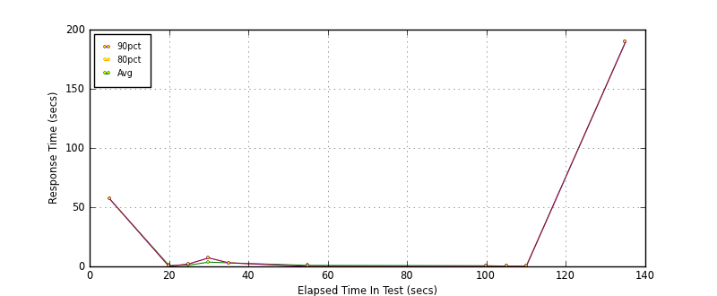
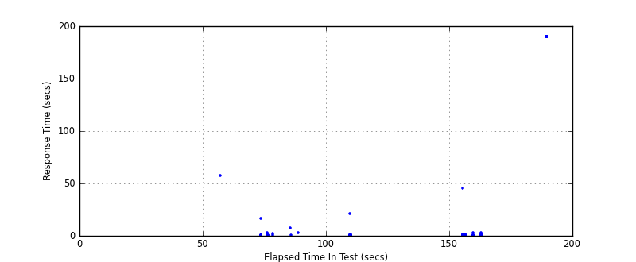
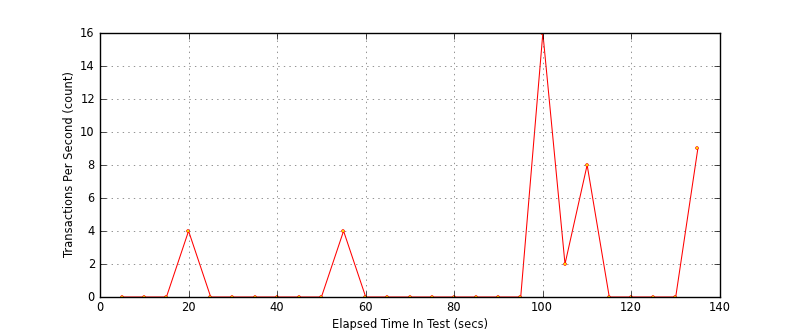

Performance Results Report
Summary
transactions: 287
errors: 68
run time: 200 secs
rampup: 0 secs
test start: 2012-07-19 09:54:15
test finish: 2012-07-19 09:56:27
time-series interval: 5 secs
workload configuration:
| group name | threads | script name |
|---|
| user_group-1 | 10 | v_user.py |
| user_group-2 | 10 | v_user.py |
| user_group-3 | 10 | v_user.py |
| user_group-4 | 10 | v_user.py |
| user_group-5 | 10 | v_user.py |
All Transactions
Transaction Response Summary (secs)
| count | min | avg | 80pct | 90pct | 95pct | max | stdev |
|---|
| 287 | 0.004 | 39.852 | 189.404 | 189.420 | 189.427 | 189.441 | 76.686 |
Interval Details (secs)
| interval | count | rate | min | avg | 80pct | 90pct | 95pct | max | stdev |
|---|
| 1 | 1 | 0.20 | 57.217 | 57.217 | 57.217 | 57.217 | 57.217 | 57.217 | 0.000 |
| 2 | 0 | 0 | N/A | N/A | N/A | N/A | N/A | N/A | N/A |
| 3 | 0 | 0 | N/A | N/A | N/A | N/A | N/A | N/A | N/A |
| 4 | 24 | 4.80 | 0.007 | 0.802 | 0.013 | 0.014 | 2.637 | 16.387 | 3.363 |
| 5 | 2 | 0.40 | 0.015 | 1.069 | 2.123 | 2.123 | 2.123 | 2.123 | 1.490 |
| 6 | 2 | 0.40 | 0.009 | 3.605 | 7.200 | 7.200 | 7.200 | 7.200 | 5.085 |
| 7 | 1 | 0.20 | 3.013 | 3.013 | 3.013 | 3.013 | 3.013 | 3.013 | 0.000 |
| 8 | 0 | 0 | N/A | N/A | N/A | N/A | N/A | N/A | N/A |
| 9 | 0 | 0 | N/A | N/A | N/A | N/A | N/A | N/A | N/A |
| 10 | 0 | 0 | N/A | N/A | N/A | N/A | N/A | N/A | N/A |
| 11 | 24 | 4.80 | 0.009 | 0.888 | 0.014 | 0.015 | 0.019 | 21.044 | 4.293 |
| 12 | 0 | 0 | N/A | N/A | N/A | N/A | N/A | N/A | N/A |
| 13 | 0 | 0 | N/A | N/A | N/A | N/A | N/A | N/A | N/A |
| 14 | 0 | 0 | N/A | N/A | N/A | N/A | N/A | N/A | N/A |
| 15 | 0 | 0 | N/A | N/A | N/A | N/A | N/A | N/A | N/A |
| 16 | 0 | 0 | N/A | N/A | N/A | N/A | N/A | N/A | N/A |
| 17 | 0 | 0 | N/A | N/A | N/A | N/A | N/A | N/A | N/A |
| 18 | 0 | 0 | N/A | N/A | N/A | N/A | N/A | N/A | N/A |
| 19 | 0 | 0 | N/A | N/A | N/A | N/A | N/A | N/A | N/A |
| 20 | 82 | 16.40 | 0.008 | 0.569 | 0.012 | 0.014 | 0.018 | 45.353 | 5.007 |
| 21 | 11 | 2.20 | 0.004 | 0.282 | 0.010 | 0.012 | 3.021 | 3.021 | 0.908 |
| 22 | 41 | 8.20 | 0.006 | 0.084 | 0.013 | 0.014 | 0.015 | 3.014 | 0.469 |
| 23 | 0 | 0 | N/A | N/A | N/A | N/A | N/A | N/A | N/A |
| 24 | 0 | 0 | N/A | N/A | N/A | N/A | N/A | N/A | N/A |
| 25 | 0 | 0 | N/A | N/A | N/A | N/A | N/A | N/A | N/A |
| 26 | 0 | 0 | N/A | N/A | N/A | N/A | N/A | N/A | N/A |
| 27 | 49 | 9.80 | 189.403 | 189.419 | 189.429 | 189.431 | 189.434 | 189.441 | 0.009 |
Graphs
Response Time: 5 sec time-series

Response Time: raw data (all points)

Throughput: 5 sec time-series
